专题03 几何图形中的动态旋转问题的五种模型

目录
题型一：利用分类讨论思想解决几何图形中旋转多解问题 1
题型二：几何图形中动角求定值问题 7
题型三：几何图形中动角探究数量关系问题 14
题型四：几何图形中动角求运动时间问题 22
题型五：几何图形中动角之新定义型问题 30

题型一：利用分类讨论思想解决几何图形中旋转多解问题
1．（24-25七年级上·全国·期末）如图①，点O在直线 上，过O作射线
上，过O作射线 ，三角板的顶点与点O重合，边
，三角板的顶点与点O重合，边 与
与 重合，边
重合，边 在直线的下方．若三角板绕点O按
在直线的下方．若三角板绕点O按 的速度沿逆时针方向旋转一周，在旋转的过程中，第
的速度沿逆时针方向旋转一周，在旋转的过程中，第  时，直线恰好平分锐角
时，直线恰好平分锐角 （图②）．
（图②）．
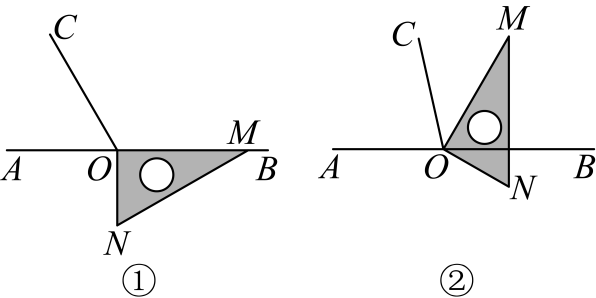
2．（24-25七年级上·辽宁沈阳·期末）如图，已知 ，射线
，射线  绕点
绕点  从
从 位置开始，以每秒
位置开始，以每秒 的速度顺时针旋转； 同时，射线
的速度顺时针旋转； 同时，射线  绕点从位置开始，以每秒
绕点从位置开始，以每秒
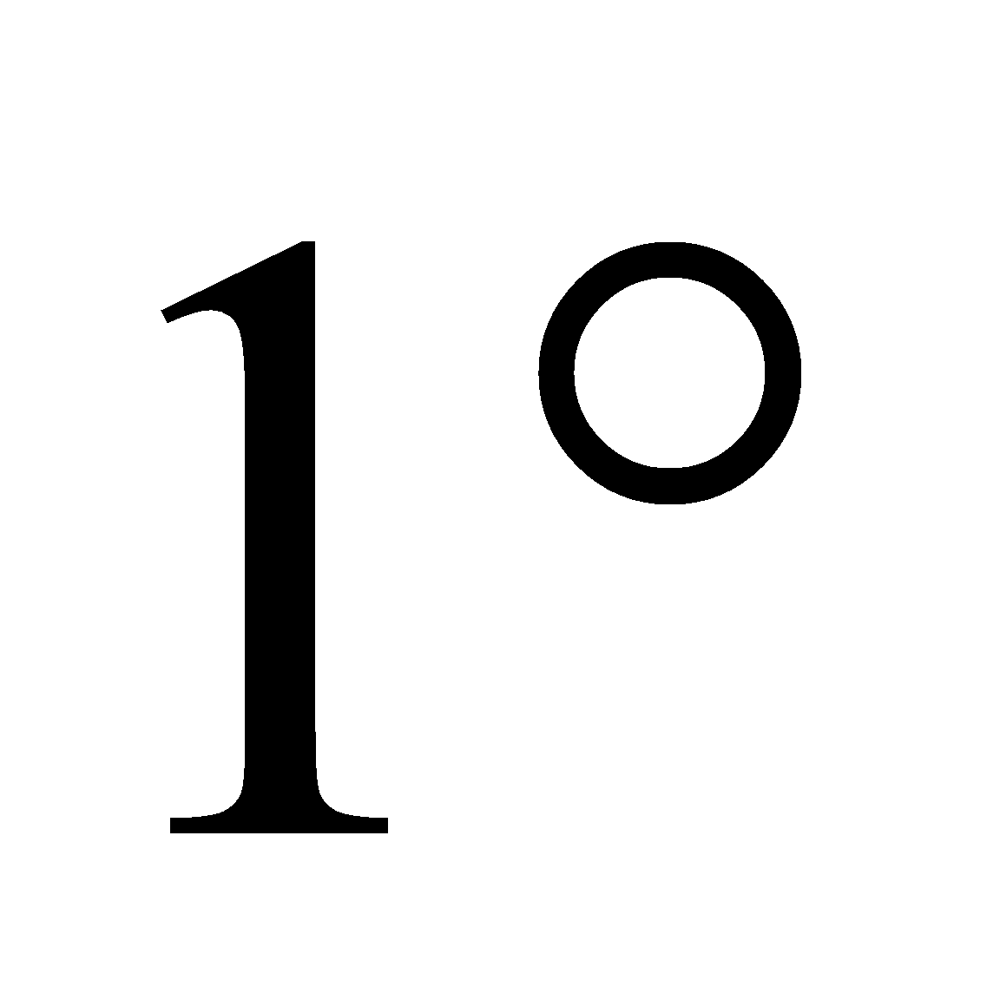
的速度逆时针旋转，并且当与成 角时，与同时停止旋转．则在旋转的过程中，经过 秒，与的夹角是
角时，与同时停止旋转．则在旋转的过程中，经过 秒，与的夹角是 ．
．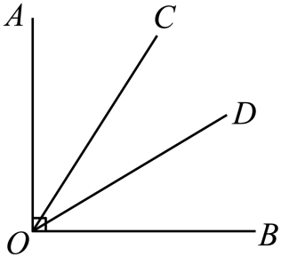
3．（23-24七年级上·江苏泰州·期末）如图，分别过直线上的点 和点
和点 作射线
作射线 、
、 ，
， ，
，
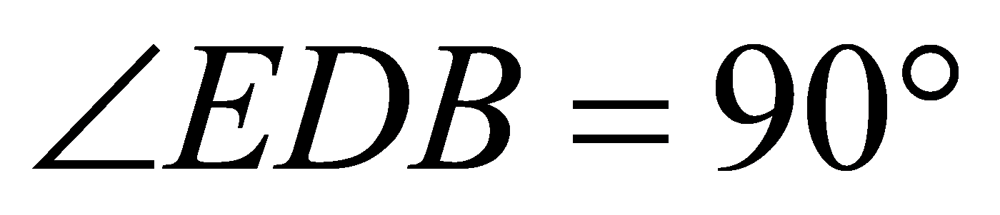
，射线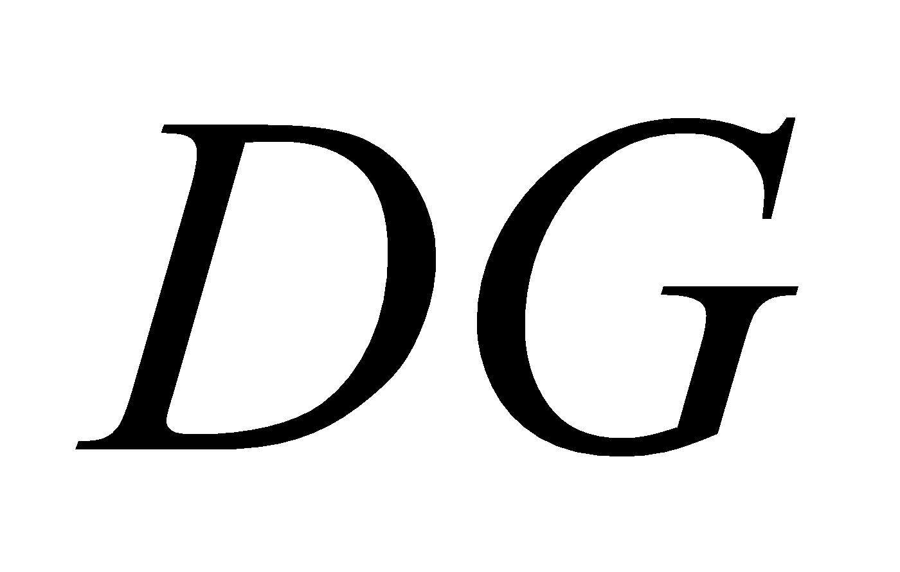
从开始绕着点以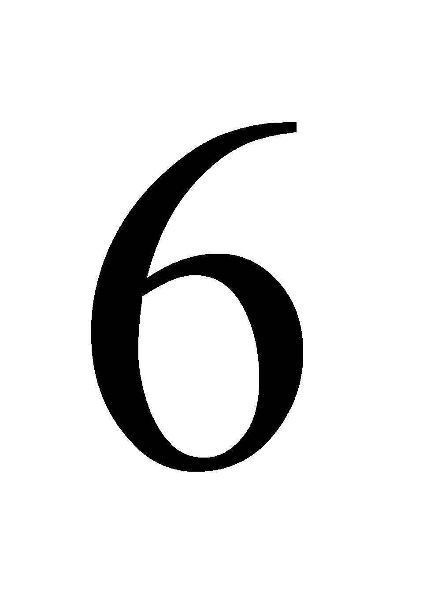
度/秒的速度顺时针旋转，射线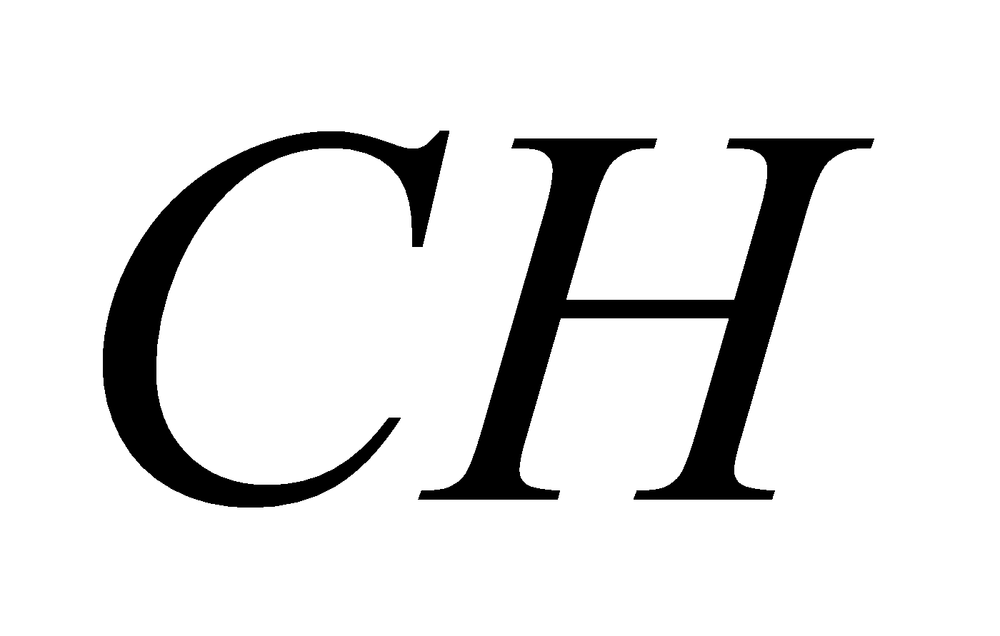
从开始绕着点以 度/秒的速度顺时针旋转，在射线旋转一周的过程中，经过 秒，射线、射线所在的直线互相垂直．
度/秒的速度顺时针旋转，在射线旋转一周的过程中，经过 秒，射线、射线所在的直线互相垂直．
4．（2024七年级上·全国·专题练习）如图1，直线 上有一点O，过点O在直线上方作射线，将一直角三角板
上有一点O，过点O在直线上方作射线，将一直角三角板
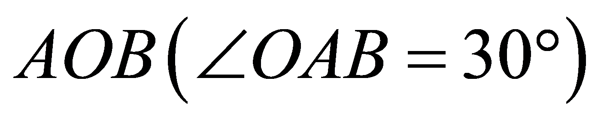
的直角顶点放在点O处，一条直角边在射线上，另一边在直线上方，将直角三角板绕着点O按每秒 的速度逆时针旋转一周，旋转时间为t秒．若射线的位置保持不变，且
的速度逆时针旋转一周，旋转时间为t秒．若射线的位置保持不变，且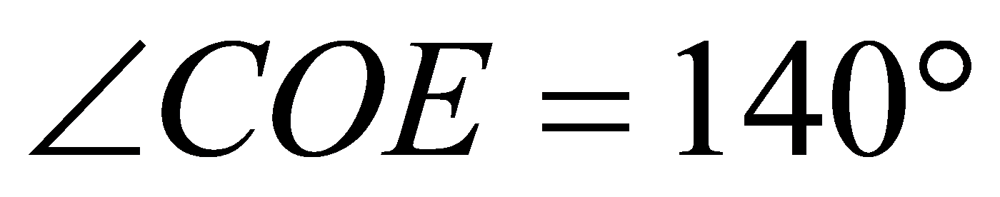
．则在旋转过程中，如图2，当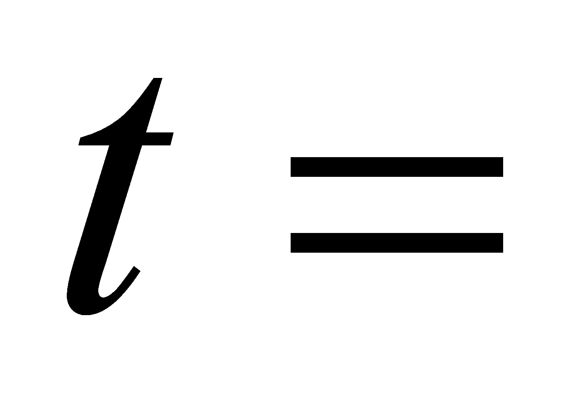
秒时，射线 与中的某一条射线恰好是另两条射线所夹角的平分线．
与中的某一条射线恰好是另两条射线所夹角的平分线．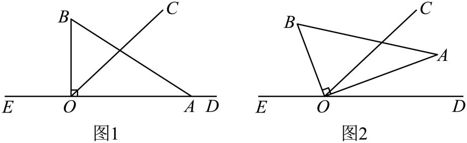
5．（24-25七年级上·河北石家庄·期末）三角板是我们常用的数学工具．如图①，先用三角板画出了直线
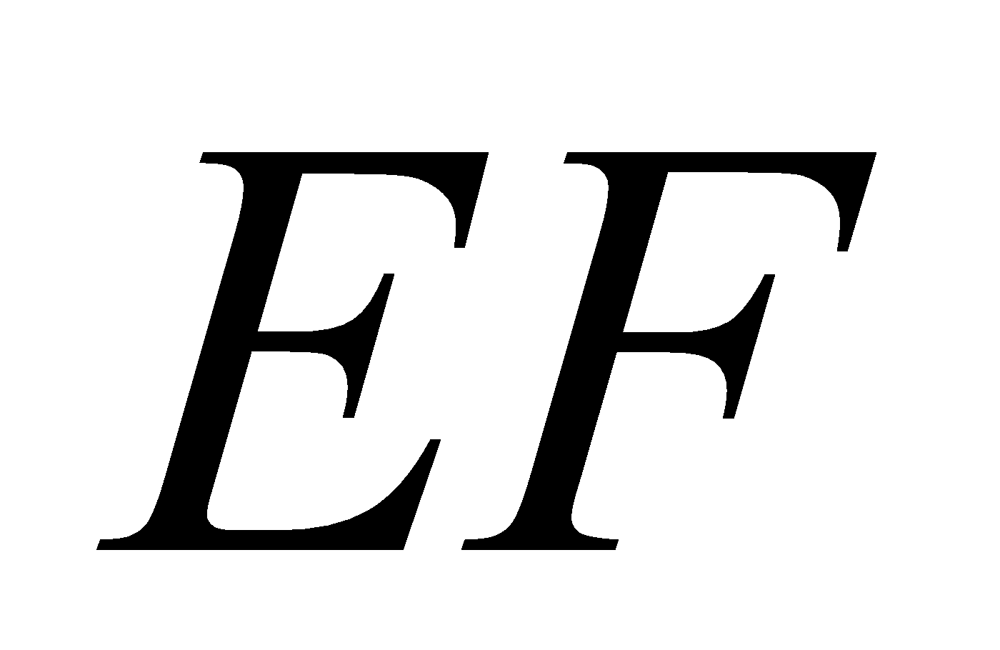
，然后将一副三角板拼接在一起，其中 角
角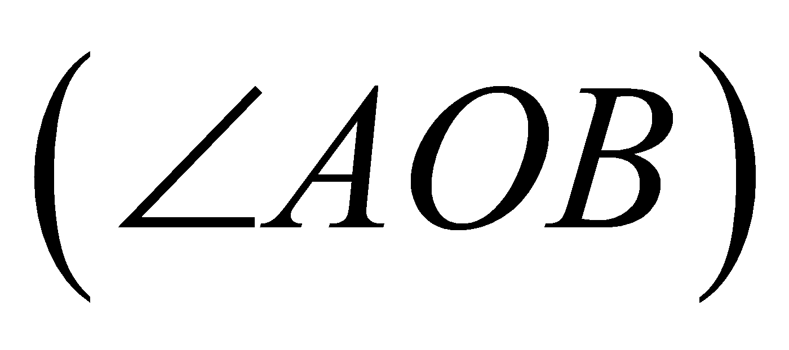
的顶点与 角
角 的顶点互相重合，且边、都在直线上．
的顶点互相重合，且边、都在直线上．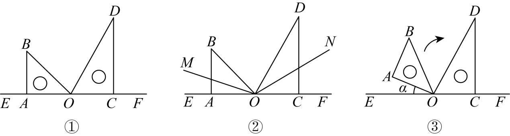
(1)以下各角中，图①不含有的角是________（填序号）；
①，② ，③
，③ ，④
，④ ，⑤
，⑤ ，⑥
，⑥ ．
．
(2)已知：射线、分别为 和
和 的角平分线，如图②，求
的角平分线，如图②，求 的度数；
的度数；
(3)固定三角板
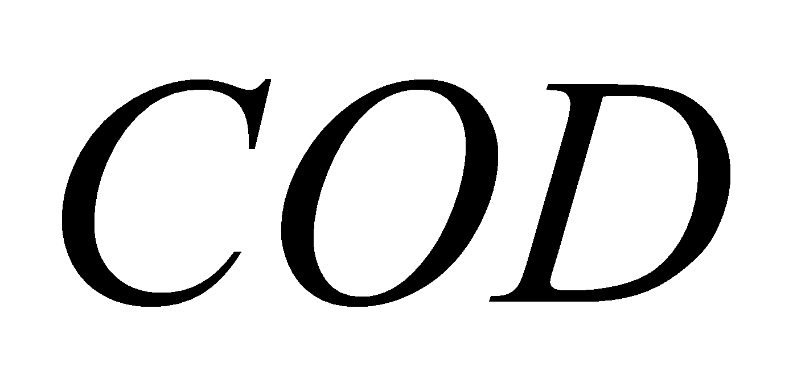
不动，将三角板 绕点按顺时针方向旋转一周，旋转角为
绕点按顺时针方向旋转一周，旋转角为 （如图③），当射线、、三条射线中一条射线为其它两条射线组成的角（小于平角）的角平分线时，直接写出旋转角的度数．
（如图③），当射线、、三条射线中一条射线为其它两条射线组成的角（小于平角）的角平分线时，直接写出旋转角的度数．题型二：几何图形中动角求定值问题
6．（25-26七年级上·全国·课后作业）如图，在同一平面内， 是绕点按顺时针方向旋转
是绕点按顺时针方向旋转 得到的，是
得到的，是 的平分线，
的平分线， 是的平分线．
是的平分线．
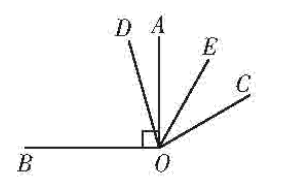
(1)若 ，即
，即 ，则
，则 ________，
________， ________．
________．
(2)在的变化过程中， 的度数是一个定值吗？若是定值，请求出这个值；若不是定值，请说明理由．
的度数是一个定值吗？若是定值，请求出这个值；若不是定值，请说明理由．
7．（24-25七年级下·广东深圳·开学考试）如图，将两块直角三角板的角和一个 角的顶点
角的顶点 叠放在一起，将三角板
叠放在一起，将三角板 绕点旋转，旋转过程中，三角板的直角边
绕点旋转，旋转过程中，三角板的直角边 始终在
始终在
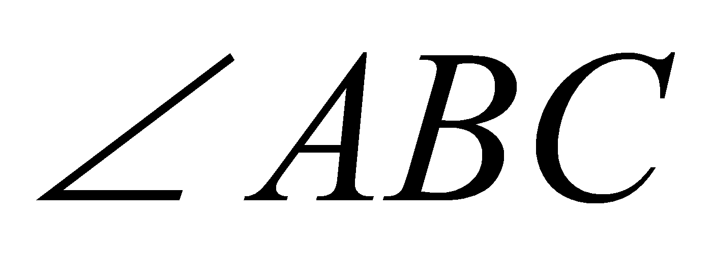
的内部，在旋转过程中
(1)若
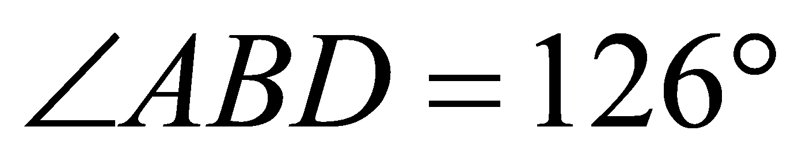
时，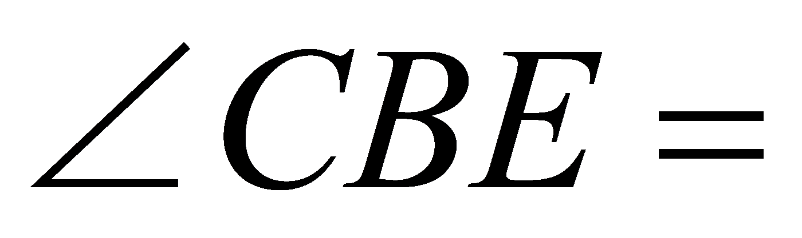
______°；(2)善于思考的小明发现，在旋转过程中，
①
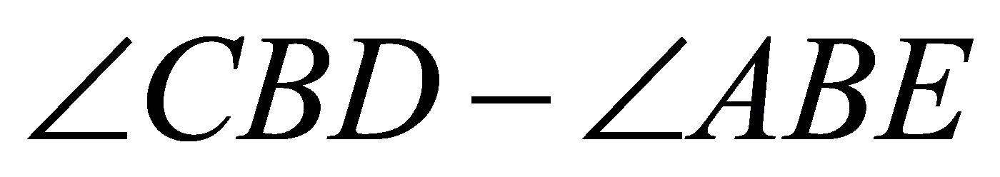
和②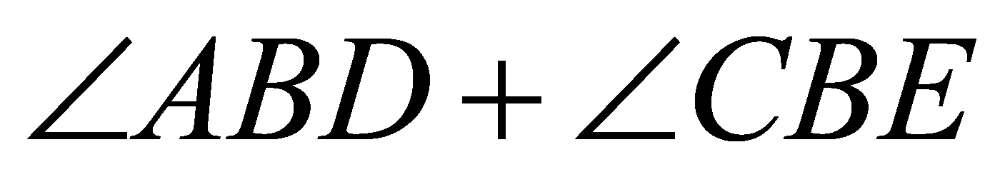
的度数均各为一个定值，请你写出这两个定值，定值：①______；②______．
(3)作 和
和 的平分线
的平分线 ，
， ，在旋转过程中
，在旋转过程中
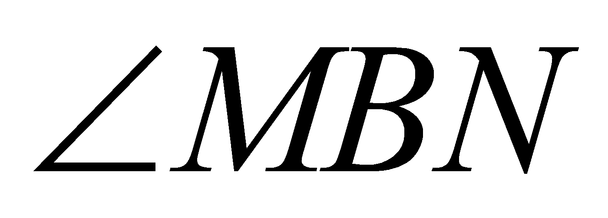
的值是否发生变化？若不变，请求出这个定值；若变化，请求出变化的范围．8．（24-25七年级下·福建莆田·期中）问题情境：如图，直线， 相交于点．把
相交于点．把 分成两个角，且
分成两个角，且
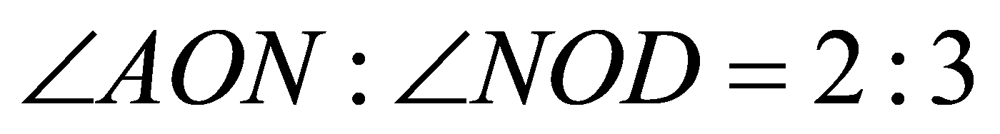
．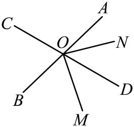
问题提出：
(1)若 ，求
，求 的度数．
的度数．
(2)如果，平分 ，那么是
，那么是 的平分线吗？试说明理由．
的平分线吗？试说明理由．
问题解决：
(3)若
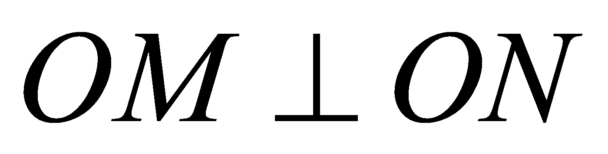
，则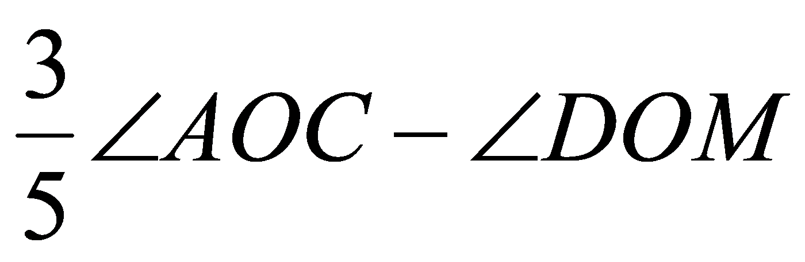
是否为定值？若是，请求出定值：若不是，求说明理由．9．（24-25七年级上·山西运城·期末）活动课上，王老师将一副三角尺按图①位置摆放在直线上，45°角的顶点与60°的顶点重合于点，斜边与直角边在直线上，然后将直角三角尺
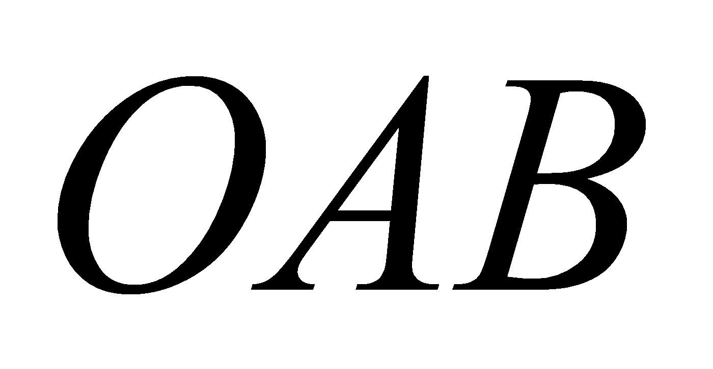
绕点按15°/秒的速度顺时针方向旋转一周，设旋转时间为 秒．
秒．
(1)旋转前， _________，_________；
_________，_________；
(2)“希望”小组同学发现：当 时，是的角平分线，请利用图②说明理由；
时，是的角平分线，请利用图②说明理由；
(3)“飞翔”小组同学发现：若直角三角板旋转至如图③的位置时， 为定值．请你判断是否正确，如果正确，请求出该度数；如果不正确，请说明理由．
为定值．请你判断是否正确，如果正确，请求出该度数；如果不正确，请说明理由．
10．（24-25七年级上·江西抚州·期末）如图（1），点为直线上一点，过点作射线，使
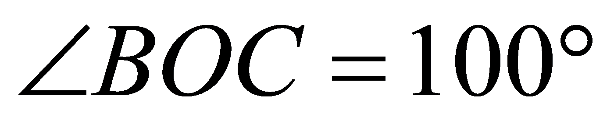
．将一直角三角板的直角顶点放在点处，一边在射线上，另一边在直线的下方．
(1)将图（1）中的三角板绕点按每秒的速度沿逆时针方向旋转秒，此时恰好第一次平分钝角，则的值为多少？
(2)将图（1）中的三角板绕点逆时针旋转至图（2），使一边在的内部，直线恰好平分，问：直线是否平分？请说明理由．
(3)将图（1）中的三角板绕点O顺时针旋转至图（3），使在的内部，请探究：
① 与
与 之间的数量关系，并说明理由．
之间的数量关系，并说明理由．
② 的值是否为定值，如果是，请求出这个定值是多少？如果不是，请说明理由．
的值是否为定值，如果是，请求出这个定值是多少？如果不是，请说明理由．
题型三：几何图形中动角探究数量关系问题
11．（24-25七年级上·山东青岛·期末）如图， 直角，
直角， 锐角，
锐角， 是
是 的平分线，
的平分线， 是的平分线．
是的平分线．
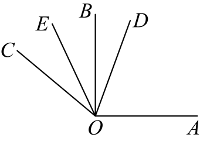
(1)当 时，
时，
 ， ；
， ；
(2)当的大小发生改变时， 的大小是否为定值？若是，请求出这个定值；若不是，请说明理由．
的大小是否为定值？若是，请求出这个定值；若不是，请说明理由．
12．（24-25七年级上·陕西西安·阶段练习）【问题发现】

如图①，将一副三角尺的直角顶点重合在点O处；
（1）① 与
与 的数量关系是____________．
的数量关系是____________．
② 与
与
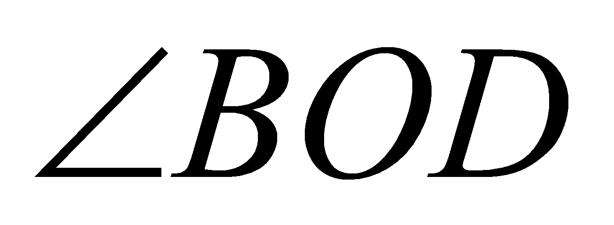
的数量关系是____________．【问题探究】
（2）若将这副三角尺按图②摆放，三角尺的直角顶点重合在点O处；
①和有怎样的数量关系？说明理由．
②和有怎样的数量关系？说明理由．
13．（24-25七年级上·吉林白城·期末）如图所示，以直线 上的一点
上的一点 为端点，在直线的上方作射线
为端点，在直线的上方作射线 ，使
，使
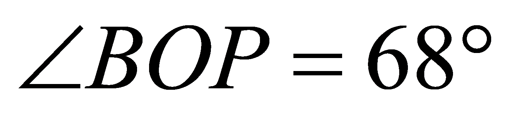
，将一块直角三角板（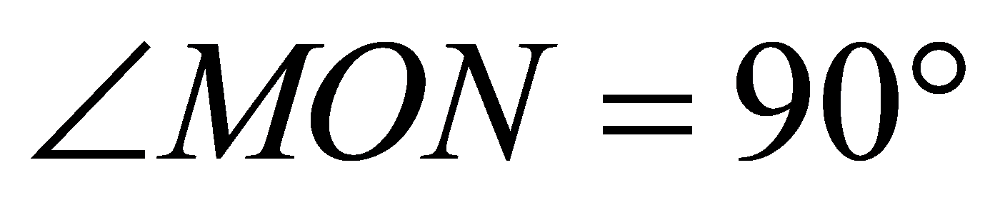
）的直角顶点放在点处，且直角三角板在直线的上方．设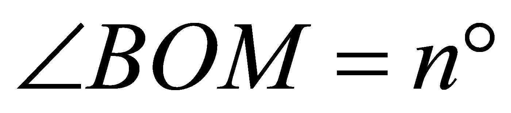
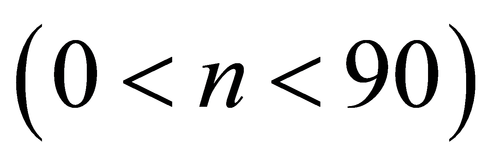
．
(1)当 时，求
时，求 的大小；
的大小；
(2)当恰好平分 时，求
时，求 的值；
的值；
(3)当 时，嘉嘉认为
时，嘉嘉认为 与
与 的差为定值，淇淇认为与的和为定值，老师说，两人的说法都正确，但是需要对分别附加条件．请你补充完整下面的信息：
的差为定值，淇淇认为与的和为定值，老师说，两人的说法都正确，但是需要对分别附加条件．请你补充完整下面的信息：
当
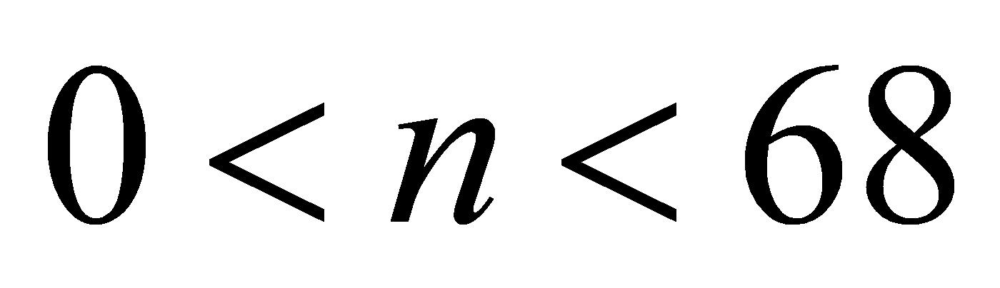
时，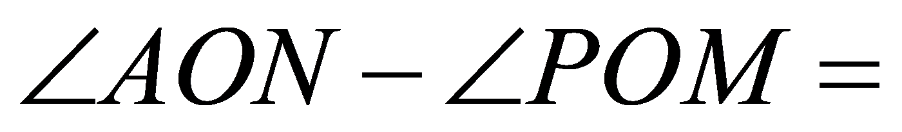
__________；当 时，
时， __________．
__________．
14．（23-24七年级上·广东汕头·期末）如图，，
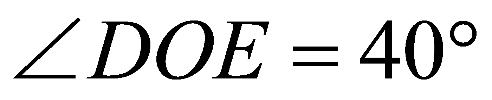
角的顶点 互相重合，将
互相重合，将 绕点旋转．
绕点旋转．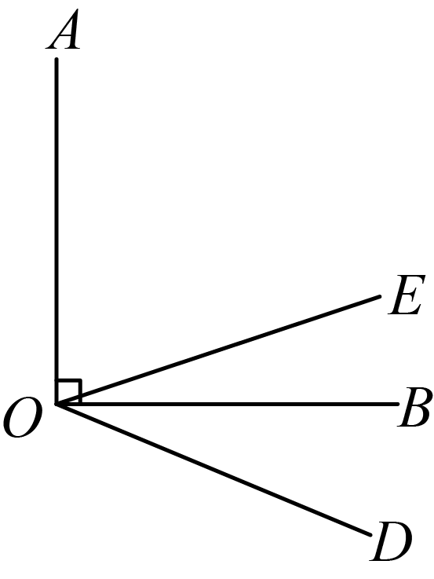
(1)当射线 ，
， 重合时，
重合时， ______
______ ，
，
(2)在绕点旋转的过程中，若射线，与 中的某一条射线是另两条射线所夹角的角平分线，则的度数为______；
中的某一条射线是另两条射线所夹角的角平分线，则的度数为______；
(3)在绕点旋转的过程中，若射线始终在 的内部．
的内部．
①普于思考的小明发现，在旋转过程中， 的值为定值，请你求出这个定值；
的值为定值，请你求出这个定值；
②作和 的平分线
的平分线 ，
， ，在旋转过程中
，在旋转过程中 的值是否发生变化？若不变，请求出这个定值，若变化，请求出变化的范围．
的值是否发生变化？若不变，请求出这个定值，若变化，请求出变化的范围．
15．（24-25七年级上·江苏苏州·期末）已知 ，
， 为内部的一条射线，
为内部的一条射线， ．
．

(1)如图1，若平分，为内部的一条射线，
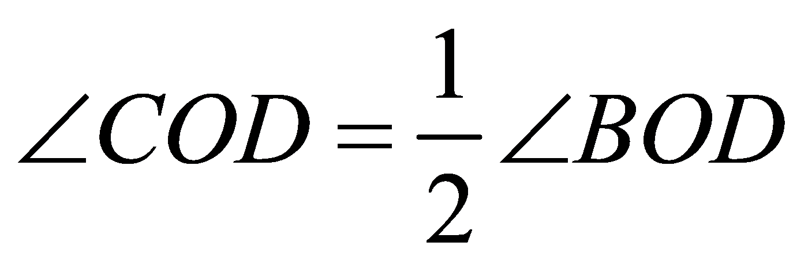
，求的度数；(2)如图2，若射线绕着O点从 开始以20度
开始以20度 秒的速度顺时针旋转至
秒的速度顺时针旋转至 结束，
结束， 绕着O点从开始以10度秒的速度逆时针旋转至结束，运动时间为
绕着O点从开始以10度秒的速度逆时针旋转至结束，运动时间为 秒，当
秒，当
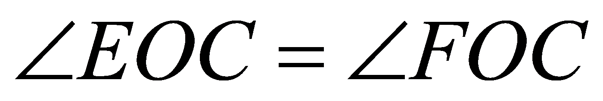
时，求的值；(3)若射线 绕着O点从开始以20度秒的速度逆时针旋转至结束，在旋转过程中，
绕着O点从开始以20度秒的速度逆时针旋转至结束，在旋转过程中， 平分
平分 ，试问
，试问 在某时间段内是否为定值，若不是，请说明理由；若是，直接写出这个定值并写出所在的时间段．（本题中的角均为大于
在某时间段内是否为定值，若不是，请说明理由；若是，直接写出这个定值并写出所在的时间段．（本题中的角均为大于 且小于
且小于 的角）
的角）
题型四：几何图形中动角求运动时间问题
16．（23-24六年级下·黑龙江哈尔滨·期末）在数学实验课中，学生进行操作探究，用一副三角板（其中
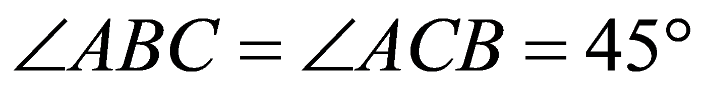
，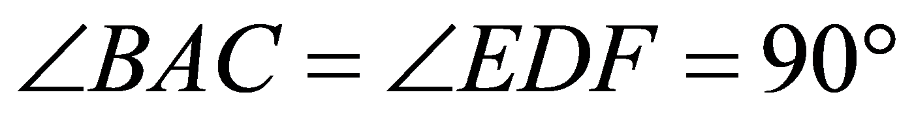
， ，
， ）按如图1所示摆放，边
）按如图1所示摆放，边 与在同一条直线
与在同一条直线 上（点C与点E重合）．如图2，将三角板
上（点C与点E重合）．如图2，将三角板 从图1的位置开始绕点C以每秒
从图1的位置开始绕点C以每秒 的速度顺时针旋转，当边与边重合时停止运动，设三角板的运动时间为t秒．
的速度顺时针旋转，当边与边重合时停止运动，设三角板的运动时间为t秒．
(1)当t为何值时， 平分
平分 ？
？
(2)当t为何值时， ？
？
17．（24-25七年级上·吉林长春·阶段练习）如图， ，射线
，射线 绕点从边位置开始按逆时针方向以每秒
绕点从边位置开始按逆时针方向以每秒 的速度旋转，同时射线
的速度旋转，同时射线 绕点从边位置开始按顺时针方向以每秒的速度旋转，设旋转时间为秒
绕点从边位置开始按顺时针方向以每秒的速度旋转，设旋转时间为秒
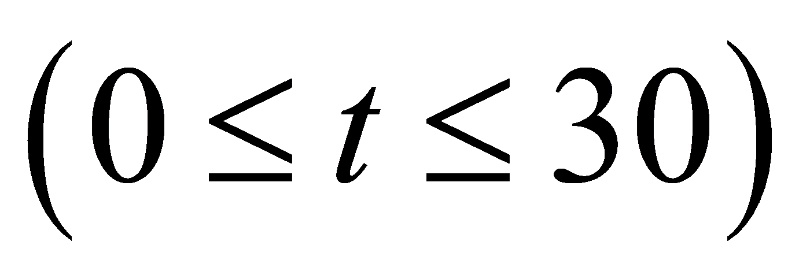
．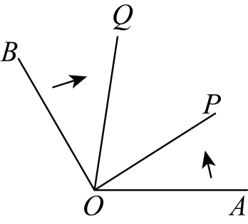
(1)当 时，求
时，求 的度数．
的度数．
(2)当与重合时，求 的度数．
的度数．
(3)当
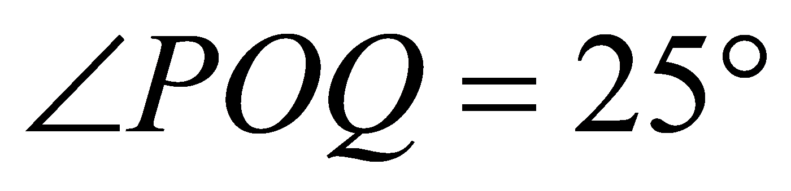
时，求的值．(4)当射线是由射线、、中的其中两条射线组成的角的平分线时，直接写出的值．
18．（23-24七年级上·安徽合肥·期末）如图，为线段 上一点，
上一点， ，
， 为的角平分线，定义
为的角平分线，定义 与
与 重合时为初始位置，将绕着点从初始位置开始，以
重合时为初始位置，将绕着点从初始位置开始，以
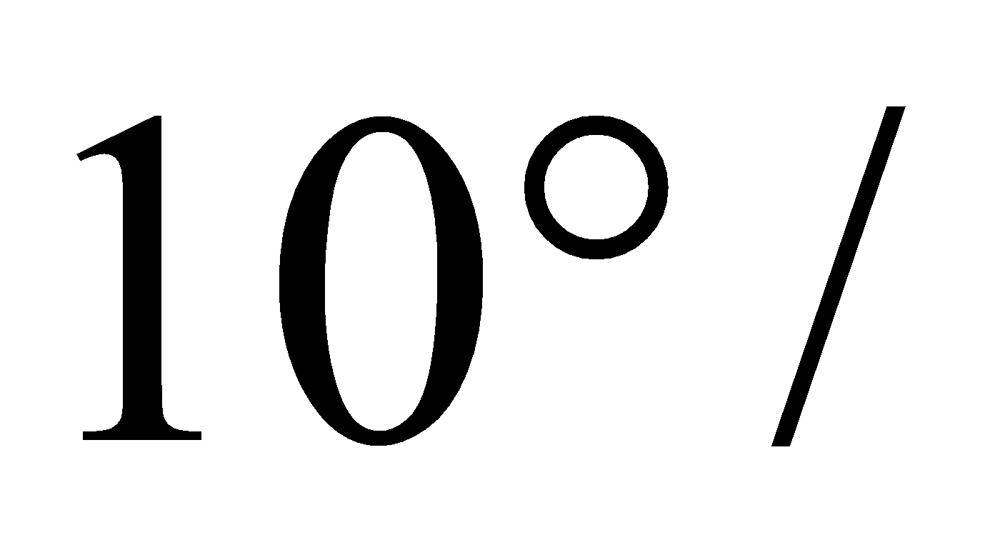
秒的速度顺时针旋转，至 与重合时终止．
与重合时终止．
(1)当从初始位置旋转秒，求此时 的度数；
的度数；
(2)当从初始位置旋转至
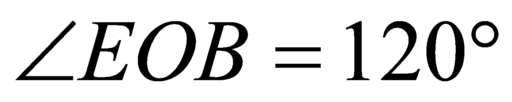
时，求此时的值；(3)当从初始位置旋转至 时，__________秒（用含有m的代数式直接表示）．
时，__________秒（用含有m的代数式直接表示）．
19．（23-24七年级上·河南信阳·期末）将一副直角三角板按图1所示摆放在直线  上（直角三角板
上（直角三角板
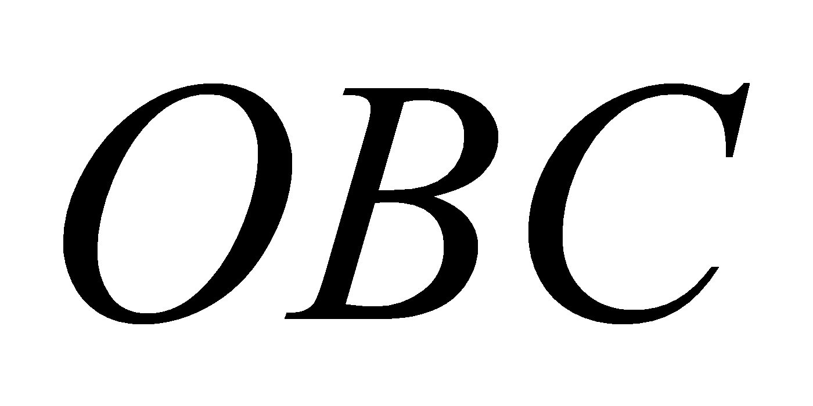
直角三角板 ，
， 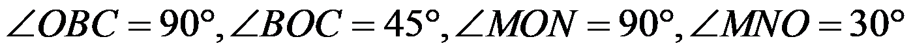
），保持板不动，将三角板绕点 O 以每秒： 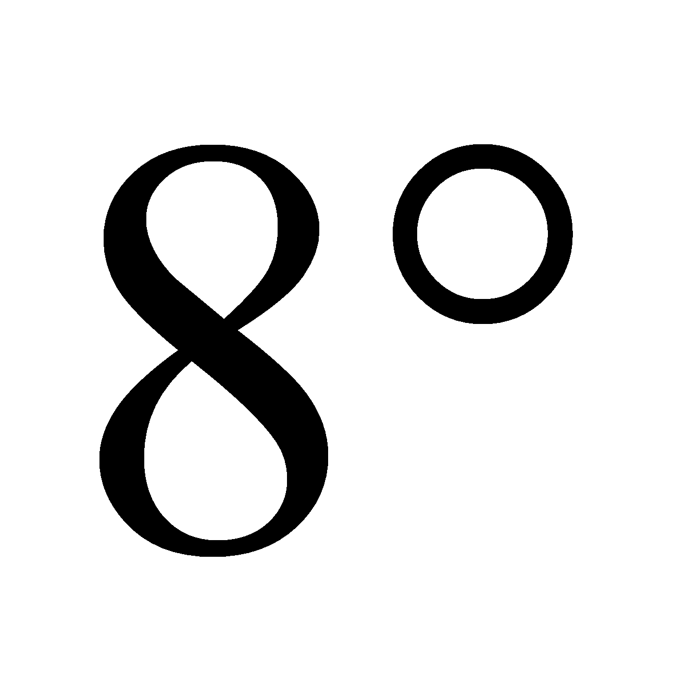
的速度顺时针方向旋转t秒．(1)如图2，当 ____秒时，平分 ；
(2)继续旋转三角板，如图3，使得  同时在直线 的右侧，猜想与有怎样的数量关系，并说明理由；（数量关系中不能含 t）
同时在直线 的右侧，猜想与有怎样的数量关系，并说明理由；（数量关系中不能含 t）
(3)直线的位置不变，在三角板开始顺时针旋转的同时，另一个三角板也绕点 O 以每秒的速度顺时针旋转，当旋转至射线上时，两个三角板停止运动．当t为多少时， ？
20．（23-24七年级上·江苏盐城·期末）【操作拼图】
已知一副直角三角板先按图中的方式拼接在一起，其中与直线重合， ，．
，．

（1）在上述所拼图形中， 的度数为_____°．
的度数为_____°．
【问题探究】
（2）在上述所拼图形基础上，让三角板固定不动，将三角板绕着点O以每秒3°的速度顺时针方向旋转，且两块三角板均在直线的上方．设三角板的旋转时间为t秒，在旋转过程中，请求出当时，旋转时间t的值．
【拓展延伸】
（3）在按照[操作拼图]要求拼好图后，让三角板绕着点O以每秒3°的速度顺时针方向旋转的同时，三角板也绕着点O以每秒2°的速度逆时针方向旋转．在旋转过程中，两块三角板均在直线的上方，且当三角板AOB停止旋转时，三角板也停止旋转．设三角板的旋转时间为t秒．在旋转过程中，是否存在某一时刻使三条边中一边是另外两边所成角的角平分线？若存在，请求出此时t的值；若不存在，请说明理由．
题型五：几何图形中动角之新定义型问题
21．（24-25七年级上·浙江湖州·期末）定义：从的顶点出发，在角的内部引一条射线 ，把分成
，把分成 的两部分，射线叫做的三等分线．若在中，射线
的两部分，射线叫做的三等分线．若在中，射线 是的三等分线，射线是
是的三等分线，射线是 的三等分线，设
的三等分线，设 ，则用含x的代数式表示为（ ）
，则用含x的代数式表示为（ ）
A． 或
或 或
或 B．或或 C．或或 D．或或
B．或或 C．或或 D．或或
22．（24-25七年级上·安徽合肥·期末）定义：如果一个角内部的一条射线将这个角分成两个角，其中一个角是另一个角的 倍，那么我们将这条射线称为这个角的
倍，那么我们将这条射线称为这个角的 分位线．例如：如图1，
分位线．例如：如图1， ，则为的5分位线；，则也是的5分位线．
，则为的5分位线；，则也是的5分位线．

（1）如图2，点A、、 在同一条直线上，为一条射线，，分别为与的3分位线，（，
在同一条直线上，为一条射线，，分别为与的3分位线，（， ），
）， ，则
，则 ；
；
（2）如果点A、、在同一条直线上，为一条射线，已知射线、分别为与的5分位线，且 ，则 ．
，则 ．
23．（24-25七年级上·浙江杭州·期末）定义：从一个钝角的顶点出发，在角的内部作一条射线，若该射线将这个钝角分得的两个角中有一个角与钝角互为补角，则称该射线为此钝角的“割补线”．如图，点O在直线上，在直线的上方，且 ，钝角
，钝角 的“割补线”记为．
的“割补线”记为．

(1)若，求 的度数；
的度数；
(2)若恰好平分，求 的度数；
的度数；
(3)若是 的平分线，是的平分线，求出
的平分线，是的平分线，求出 与
与 的数量关系．
的数量关系．
24．（24-25七年级上·四川成都·期末）如图1，已知射线
(1)若， ，且
，且 ，求的度数；
，求的度数；
(2)若， 分别是和的平分线，，求的度数；
分别是和的平分线，，求的度数；
(3)定义：从 的顶点出发，在角的内部作一条射线，若该射线将
的顶点出发，在角的内部作一条射线，若该射线将 分得的两个角中有一个角与之和为
分得的两个角中有一个角与之和为 ，则称该射线为的“分余线”．
，则称该射线为的“分余线”．
如图2，，为的平分线，在的内部作射线，使，当为 的“分余线”时，求的度数．
的“分余线”时，求的度数．
25．（24-25七年级下·四川遂宁·期末）新定义：若两个角的和为 ，我们则称这两个角互为“百度角”；例如，
，我们则称这两个角互为“百度角”；例如， ，则与
，则与 互为“百度角”．（本题中所研究的角都是大于而小于的角．）
互为“百度角”．（本题中所研究的角都是大于而小于的角．）

【阅读理解】
（1）如图1，如果 ，与互为“百度角”，则 ．
，与互为“百度角”，则 ．
【初步应用】
（2）射线平分角，为内部的一条射线，且满足 ，若与互为“百度角”，求的值；
，若与互为“百度角”，求的值；
【解决问题】
（3）如图2，已知，射线从出发，以每秒 的速度绕O点顺时针旋转，同时，射线从出发，以每秒
的速度绕O点顺时针旋转，同时，射线从出发，以每秒 的速度绕O点逆时针旋转，设运动的时间为t秒
的速度绕O点逆时针旋转，设运动的时间为t秒 ．当为何值时由三条射线形成的角中有两个角互为“百度角”？
．当为何值时由三条射线形成的角中有两个角互为“百度角”？
26．（24-25七年级上·四川成都·期末）定义：从一个角的顶点出发，在角的内部引两条射线，如果原角是这两条射线所成的角的倍，那么原角叫做这两条射线所成的角的倍角．如图1，若，则是的两倍角．
(1)如图1：已知， ，是的两倍角，则
，是的两倍角，则 ___________；
___________；
(2)如图2：已知 ，将绕点按顺时针方向旋转一个角度至，当旋转的角度
，将绕点按顺时针方向旋转一个角度至，当旋转的角度 为何值时，是的三倍角．
为何值时，是的三倍角．
(3)已知 ，把一块含有
，把一块含有 角的三角板如图3叠放，将三角板绕顶点以2度/秒的速度按顺时针方向旋转（如图4）．问：在旋转一周的过程中，射线
角的三角板如图3叠放，将三角板绕顶点以2度/秒的速度按顺时针方向旋转（如图4）．问：在旋转一周的过程中，射线 ，，，能否构成三倍角？若能，请求出旋转的时间：若不能，请说明理由．
，，，能否构成三倍角？若能，请求出旋转的时间：若不能，请说明理由．
27．（24-25七年级下·陕西西安·开学考试）【阅读新知】
如图①，射线在内，图中共有三个角、和，若其中有一个角的度数是另一个角的度数的 倍，则称射线是的“巧线”．
倍，则称射线是的“巧线”．
【理解运用】
（1）的角平分线______这个角的“巧线”；（填“是”或“不是”）
【拓展提升】
如图②，一副三角板（分别含 ，，
，， 和
和 ，
， ，）如图所示摆放在量角器上，边
，）如图所示摆放在量角器上，边 与量角器刻度线重合，边
与量角器刻度线重合，边 与量角器刻度线重合（，），将三角板
与量角器刻度线重合（，），将三角板 绕量角器中心点
绕量角器中心点 以每秒的速度顺时针方向旋转，当边
以每秒的速度顺时针方向旋转，当边 与刻度线重合时停止运动，设三角板的运动时间为秒．
与刻度线重合时停止运动，设三角板的运动时间为秒．
（2）求为何值时，射线是的“巧线”？
（3）若三角板按照原来方向旋转的同时，三角板也绕点以每秒的速度逆时针方向旋转，此时三角板绕点旋转的速度比原来每秒快了 ．当三角板停止旋转时，三角板也停止旋转，问：在旋转过程中，是否存在某一时刻，使三条射线、
．当三角板停止旋转时，三角板也停止旋转，问：在旋转过程中，是否存在某一时刻，使三条射线、 、中，其中一条恰好是以另两条组成的角的“巧线”？若存在，请直接写出的值．若不存在，请说明理由．
、中，其中一条恰好是以另两条组成的角的“巧线”？若存在，请直接写出的值．若不存在，请说明理由．